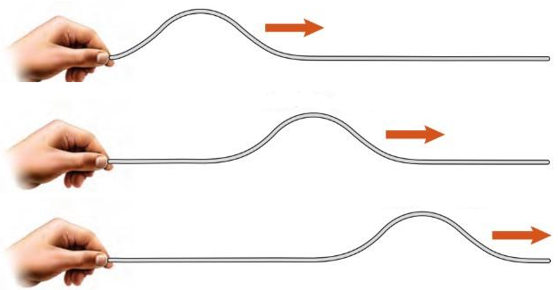
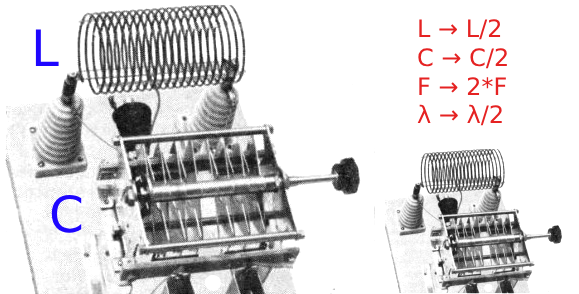
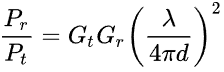
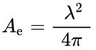
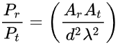
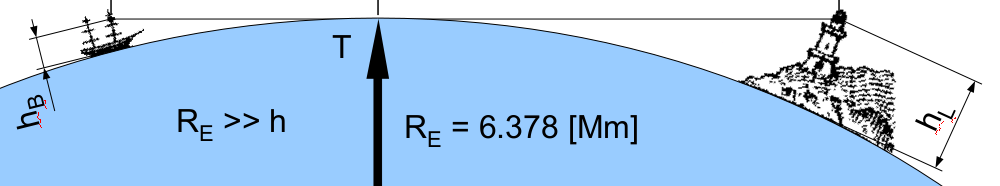

Wireless communication, also called radio communication, is the art of transmitting information by means of electromagnetic waves.
Radio engineering was the first application of electron tubes (also named vacuum tubes or valves), and the strong demand for radio communication stimulated the development of electronic devices, initially based on vacuum and later on semi-conductor materials in solid state.
This also stimulated the development of signal processing methods based on the spectral representation of signals, the theory of which was already ready (complex numbers, Fourier transform) but had served few applications.
A wave is the propagation in space of some disturbance of a physical quantity.
Waves have two essential properties:
These properties are necessary and sufficient. Well known examples illustrating these properties are water surface waves, mechanical waves along strings and elastic materials, and acoustic waves or sound
It is important to understand the difference between an instantaneous action and a wave. The door bell is an example of instantaneous action, and in this case when you pull the chain, you have to deal with the inertia of the lever holding the bell and the bell itself. The radio equivalent of this is called "near field communication" (NFC)
But if you replace the chain by a long horizontal rope, the pulse your hand applies generates a wave pulse which takes an observable time to travel, and in this case you have to deal with the inertia of the rope, not the bell.
This is an illustration of two fundamental consequences of the definition of a wave:
One may object that in modern physics, no instantaneous action may even exist. But we are permitted to consider an action as instantaneous if the propagation delay is negligible in the timescale of the observed events, or in radio vocabulary, if the distance is negligible compared with the wavelength.
Notably when we analyze electrical circuits represented as interconnected components like resistors, capacitors,etc.. (said "lumped elements"), we consider that the interaction between them is propagated instantaneously by the wiring. But when working with high frequency signal (familiarly called RF signals for Radio Frequency signals), more sophisticated models become necessary, like transmission lines and "distributed elements".
A spectacular example of "action at a distance" is the influence of a magnet on ferrous objects or other magnets. During centuries, physicists considered this action as instantaneous and then not implying waves.
The same remark applies to the electrostatic forces.
At the same time, the study of static magnetic and electrostatic fields found no interaction between them.
But on the dynamic side, several laws of electromagnetism exist which connect magnetics and electrostatics:
Amazingly soon after Ampere's and Faraday's works, Maxwell formulated an unified generalization of all the laws of electricity and magnetism, known as Maxwell's equations (1865). These equations have two remarkable consequences :
This implies the existence of waves, and also that these waves are electric and magnetic at the same time, hence electromagnetic.
The electric field and the magnetic field are perpendicular to the propagation direction (transversal wave), and perpendicular to each other.
By definition, the polarization is the direction of the electric field (vertical on the figure below).
Special antenna designs create a circular polarization where the E and B vectors rotate in time (circular polarization can be viewed as the sum of a vertically polarized wave and an horizontally polarized one, with a phase shift of 90 degrees)
These polarizations are also observed with light.
The existence of waves requires that energy is stored in the transmission medium. But electromagnetic waves may travel in vacuum, so during some time, physicists assumed the existence of an undetectable medium called "aether" to hold this energy. With the special relativity, Einstein convinced everyone that electromagnetic energy is simply stored in vacuum (1905).
Scientific experiments led by Hertz confirmed the predicted properties of electromagnetic waves, including optical-like properties (reflexion, refraction, polarization)(1888).
Hertz produced waves using resonant circuits excited by pulses obtained by means of sparks (brief electric arcs).
As soon as he knew about this, Marconi started to develop commercial wireless communication solutions based on these "hertzian waves" also named "radio waves".
Young's experiments with optical interferences proved that light is a wave (1807), permitted measurement of its wavelength, and matched colors with wavelengths.
Measuring light's speed appeared very difficult, but at the time of Maxwell's works, some results were available. Observing that the speed of light was very close to the speed of electromagnetic waves which he had predicted independantly, Maxwell suggested that light is an electromagnetic wave, together with infrared and ultraviolet. Hertz confirmed this by experiments (1888).
At that point, it is necessary to recall that similar results are obtained if the linear dimensions of electric devices (inductors, capacitors, antennas) are scaled proportionnaly to the wavelength.
This helps understanding the practical difference between radio waves and light:
In optics, the spectrum is a representation of light intensity as a function of wavelength.
In signal processing, the spectrum is a representation of a signal as a function of frequency. Now we know that the visible light spectrum is a small portion of the electromagnetic spectrum.
It should be noted that the transitions between different zones of the spectrum are not sharp, some are rather a matter of convention.
A bandwidth is the range of frequencies which are required to carry a desired information flow.
To establish a radio link, a carrier frequency is chosen in the spectrum, according to:
The lower bound of the usable radio spectrum is determined by:
In practice, frequencies lower than 30 kHz are used only for very special needs (communication with submarines).
The higher bound of the usable radio spectrum is where optical (infrared) methods become more suitable, and depends on technology evolutions, a limit of 300 GHz is admitted in 2025.
Fair use of the radio spectrum relies on rules enforced by governemental authorities (examples : US, EU). These rules cut the spectrum into bands, each one strictly reserved to a determined application and subject to transmitted power limitations, geographical limits and time constraints.
A small fraction of the spectrum is occupied by the ISM bands (Industrial, Scientific and Medical), which are available for general use for any purpose, without any license, but with low transmitted power limit allowing only a short range.
Home appliances like remote controls, Bluetooth, Wifi and toys work in ISM bands.
(full size chart: www.ntia.gov/sites/default/files/publications/january_2016_spectrum_wall_chart_0.pdf)
In the transceiver, the carrier is modulated by the source signal in order to carry the information.
The simplest form of modulation is the On-Off keying, which was historically used to transmit messages with the Morse code. Nowadays, On-Off keying is used for transmitting binary data between digital devices. It is an extreme case of amplitude modulation.
Modulation techniques fall into 3 categories:
In theory, frequency modulation and phase modulation are similar, frequency being the derivative of phase.
In practice modulation and demodulation solutions for frequency and phase are implemented differently
Demodulation of AM may be the simplest, using a diode to extract the envelope of the received RF signal. The first generation audio receivers were called "crystal radio" because a natural galena crystal (PbS, lead sulfide) was used as semiconductor diode.
The theoretical channel bandwidth for AM is twice the source bandwidth (6 kHz for 3 kHz audio).
FM was introduced in order to improve the quality of audio broadcasting, up to High Fidelity, as soon as progresses in technology opened new, higher frequency bands, in the VHF band (around 100 MHz), where wider channel widths (such as 250 kHz) were allowed.
Demodulation of FM is more complex, involving clipping to remove any unwanted amplitude fluctuation, filtering through a linear slope filter, followed par amplitude demodulation.
The channel bandwidth for FM is theoretically infinite and complicated to calculate (based on Bessel's functions). A simplified approximation is Carson's rule, giving the channel bandwidth as twice the sum of frequency deviation and source bandwidth.
AM and FM are also used for voice communication for aviation (AM), marine (FM), walkie-talkie (AM and FM).
Comparison between AM and FM for audio :
Phase modulation is used mainly for digital transmission (as well as AM and FM), with the help of quadrature amplitude (QAM or IQ) modulation and demodulation, which become more affordable in digital form.
The received radio signal needs to be filtered by a narrow band-pass filter, for two reasons :
The sensitivity of a receiver is not limited by the amplification gain (which can be increased as much as desired), but by the noise present at the first amplification stage. The noises sources can be classified as:
Thermal noise is a major concern, it is present in the whole specrum, it is unavoidable and can be fought only by reducing the temperature of the whole equipment (which is done only for extremely demanding applications)
So reducing the amplification bandwidth to the minimum required is the first solution to improve the sensitivity of a receiver.
But if the bandwidth is small compared to the carrier frequency, making such a narrow-band filter is difficult (because of the very high value of its Q factor).
If we add the requirement of making it tunable in order to let the user choose a channel, this turns to be just impossible.
This problem may be solved by means of frequency translation, which is the principle of the super-heterodyne receiver.
The ideal mixer is a multiplier, generating the product of two signals
If we consider two periodic signals :
A(t) = cos(FAt) B(t) = cos(FBt)
their product is :
A(t)B(t) = 0.5( cos( (FA+FB)t ) + cos( (FA-FB)t )
If we consider B(t) as a constant reference signal, and A(t) as one component of the signal to process, we observe that we get two copies of A(t), translated on the f axis by +- FB. One of these copies can be selected for subsequent processing, by filtering.
If the mixer is non-ideal, it will present additional components at frequencies 0(DC), FA, FB, and higher harmonics, which can all be removed by filtering as well.
The idea is to use a local oscillator LO giving a reference frequency close to the carrier frequency RF, and a mixer to translate the incoming signal to a much lower frequency band said IF (intermediate frequency).
Then the channel bandwidth filtering around IF would be made easier, requiring a moderate Q factor.
In addition, tuning the receiver would be done mainly at the local oscillator, then the IF stages would need no tuning.
In the figure, fRF is lower than fLO. If it were higher, at the same distance, the signal would be translated at the same place, so the receiver actually accepts two carrier frequencies, the desired one, and another one, 2*fIF apart, called the "image frequency", generally unwanted.
For solving this problem, in the classic superheterodyne receiver, a pre-filter is inserted ahead of the mixer to attenuate the image frequency. This filter needs a moderate Q factor, but it has to be tuned in parallel with the local oscillator.
In spite of these complications, the superheterodyne is still the most successful receiver architecture.
To take advantage from the digital technology, some analog elements of a radio receiver or transmitter may be replaced by digital implementations, notably:
The expected benefit is an increased flexibility, with the ability to program the carrier frequency, the intermediate frequency, the channel bandwidth, the modulation scheme and other parameters.
There are less analog elements, but their quality is critical:
In some cases, IF filtering and demodulation by software if feasible, leading to the "software defined radio" concept.
As an example, the figure below is the simplified diagram of the CC1101 integrated circuit by Texas Instruments.
It is a single chip half-duplex transceiver (transmitter and receiver) for digital data, with a superheterodyne receive section. It targets low cost, ultra low power communication.
The frequency synthesizer provides the carrier source for transmission and the local oscillator for reception.
it has two outputs with a 90 degrees phase shift, in order to drive two mixers performing quadrature demodulation (IQ) for reception.
For transmission, the frequency synthesizer supports FM and PM, while AM is performed by the power amplifier PA (AM connexion is missing on the diagram).
For reception, the two IF channels I (in-phase) and Q (quadrature) are pre-filtered and converted to digital in order to be further filtered and demodulated digitally.
Benefits of digital IQ demodulation : Considering that I and Q are respectively the real and imaginary parts of a complex number representing the instant value of the signal, the signal magnitude and its phase can be computed digitally.
The magnitude provides the AM demodulation without requiring any further filtering (unlike the diode-based envelope detector), while the phase provides phase demodulation and, after derivation, frequency demodulation. The phase signal may also help to set apart the image signal.
Antennas come in a variety of shapes, then in order to compare them, their gain relative to an hypothetical isotropic antenna is used, expressed in dBi ("i" for isotropic)
The gain is mesured in the direction of maximum signal, then a positive gain is normally obtained, thanks to the fact that real antennas yield an anisotropic radiation, which concentrate power in some directions.
The greatest gain is obtained with the most directive antennas
The antennas being reversible, the gain applies to transmission and reception as well
Analytic modeling of antennas is feasible only in simple cases, the dipole is the best known among these.
The dipole is a pair of colinear conductive segments fed from the center by a balanced (symmetrical) signal. If the lenghth of each segment is γ/4 (a quarter of the wavelength), its theoretical impedance is purely resistive (73 Ohms), which facilitates coupling with the transmitter or receiver. Its radiation is omnidirectional in the plane perpendicular to the segments, but is minimal in the direction pointed by the segments, its radiation pattern is shaped like a torus. Its theoretical gain is 2.2 dBi.
The monopole antenna can be derived from the dipole, by putting an infinite conductive "ground" plane in place of the symmetry plane, where the potential is already zero in the dipole model. Then it has an impedance of 36.5 Ohms and a gain of 5.2 dBi.
It is totally possible to have a segment length different from the reference value γ/4, then the radiation pattern, the impedance and the gain will be different. A non-resistive impedance can be corrected using a matching network between the antenna and the transmission line.
In practice, for large wavelengths, the monopole is frequently implemented as a mast, using earth as a ground plane. For shorter wavelengths, the chassis or body of an equipment or vehicle can be considered as a non-ideal ground plane.
A monopole antenna may be significantly shorter than γ/4, in this case its impedance can be made real by means of a series inductor, this assembly is called a "base loaded antenna". For hand-held devices, this assembly is conveniently protected by a molded plastic sleeve.
In open space, the received power decreases with the distance, according to a very general "inverse square law"(proportional to 1/d2).
This is more precisely expressed by Friis' formula :

where Pt and Pr are the transmitted and received electrical power, Gt and Gr are the respective antenna gains, γ is the wavelength and d the distance. Note: Gt and Gr are expressed as linear values, not dB.
We observe that the received power is proportional to γ2, which implies that higher frequencies reach shorter ranges. This disadvantage is related with the fact that higher frequencies use smaller antennas, due to the role of γ as a scaling factor.
We can compare this with optics : the light power received by an absorbing object is proportional to the area of the wavefront it intercepts, so we can imagine that the radio antenna has a "virtual" or "effective" area, scaled by γ2 and G.
Theoretical calculations give the average effective area of any antenna, which is also the effective area of the ideal isotropic antenna :

The effective area of an arbitrary antenna in the direction of maximum signal is its gain multiplied by this value. This leads to the other form of Friis' formula :

In the case an antenna using a reflector to concentrate the beam, the effective area is approximately the physical area of the reflector, so the it can be increased regardless of the wavelength.
In this case, higher frequencies are freed from the γ disadvantage mentioned above, and in the case of reflector at both ends,
they even benefit from a short γ.
The greatest range ever achieved by a human made radio link is the communication with space probe Voyager 1 :
Besides the well known parabolic reflector, there are other solutions to increase the effective aperture of an antenna :
Like light, radio waves propagate along a straight line, unless refracted, diffracted or reflected.
Due to the spherical shape of Earth, straight line propagation, also called "line of sight", is limited to the horizon, making the maximum range dependant on the altitude of the transmitter and the receiver.
Example : between an aircraft flying at 12000 m altitude and a ground station at 130 m altitude, the line-of-sight range is 431 km
But the atmosphere is not homogeneous, its density and thus its refractive index decrease with altitude, which curve light rays and radio waves towards the ground, increasing the line-of-sight range. Temperature gradients may also contribute, in either direction. A visual effect of this bending is the "sun flattening" at sunset. Typical refraction is known to increase the line-of-sight range by typically 15%
Due to the conductivity of ground, induced currents in the ground tend to guide radio waves along the Earth's curvature. These ground waves may allow a worldwide range, but work only for low frequecies, better below 3 MHz and still usable up to 30 MHz. Navigational uses of ground waves include Non Directional Beacons (NDBs) below 530 kHz
The Ionosphere is a collection of ionized gas layers in the upper atmosphere, from 48 km to 965 km altitude. Ionized gases are conductive, so these layers may reflect radio waves. These reflexions, together with ground reflexions, may creates paths far beyond line-of-sight, possibly worldwide. This effect is unreliable and is rarely usable above 30 MHz, but is still considered as a emergency backup solution in case of failure of satellite communication. It is also used for Over-The-Horizon (OTH) radar.
There is an obvious need for preventing radio users from interfering with each other, this is done at a global level by dividing the radio spectrum into bands reserved for distinct usages, like broadcasting, navigation, military, etc...
In each of these bands, many channels may be needed, so further multiplexing solutions may be implemented
In these cases, channels are separated by the carrier frequency. A channel separation or carrier interval is defined, which has to be larger than the channel bandwidth in order to account for inaccuracies in carrier frequency and imperfect band filtering in transmit end receive
This is the prefered solution for streaming transmissions, like audio and video broadcast and navigation beacons
Channels use the same frequency but different time slots
Packet multiplexing is the most flexible, suitable for digital data. Timeslots may be predefined or not, in the second case, packets are emitted at random instants.
This scheme was intensively developed for the Ethernet wired network, specified as Carrier-Sense Multiple Access with Collision Detection (CSMA/CD), and is applied to packet radio as well.
This technique consists of letting multiple stations transmit at the same time on the same carrier frequency, and let the receiver separate the contents by means of advanced signal processing, based on statistical properties of the code used by each station. This a spread spectrum technique, occupying a band much larger than the source bandwidth, but possibly compatible with extremely weak signal-to-noise ratios.
A remarkable exemple is the GPS system, where multiple satellites transmit on the same frequency.
In general the desired qualities of a radio transmission are some or all of these :
It should be understood that for a given state-of-the-art, improving one of theses qualities can be done only at the expense of sacrifying one or more of the others
Managing these trade-offs is made easier by the introduction of digital technologies
An intermediate parameter which helps understanding the interaction between these qualities is the signal-to-noise ratio SNR.
As an example, let us consider how the range is affected by the other qualities :
As a real life example, let us consider the GPS system:
These constraints imply an extremely low SNR at the receiver, far below unity. This is compensated by sacrifying bandwidth (50 bits/s) and occupation of the spectrum (more than 1 MHz)
{kind=link}
{kind=link}
{kind=link}
{kind=link}